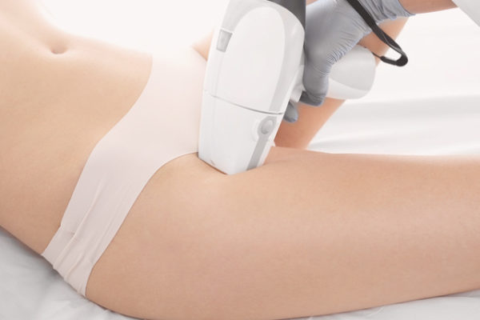
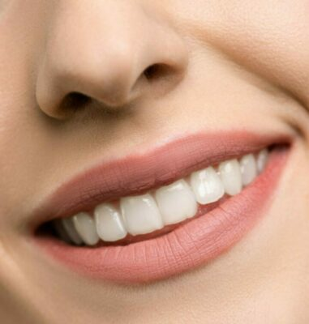

Din laserklinik i Eskilstuna
Vi jobbar med en säker lasermasksin som ger resultat. Det finns erfaren personal som har arbetat länge inom samma yrkesområde. Det finns behandlare av båda könen.
Vårt mål är att du ska känna dig trygg och nöjd, därför därför börjar vi alltid med en gratis konsultation.
Tillsammans med behandlare går du igenom vissa punkter och skriver under kontrakt.
Det finns dokument som ska fyllas i innan vi påbörjar behandlingen, t.ex. hälsodeklaration. Allt detta görs för din skull och för att vi ska kunna uppnå bästa resultatet.

Hårborttagning laser
Plasma pen

Tandblekning
Kosmetisk & tatuering
behandlingar som permanent hårborttagning, hudföryngring, tandblekning, ansiktslyft samt ett gediget kunnande borgar Nyfors laserklinik i Eskilstuna för att ge sina klienter den bästa behandlingen och motsvara dennes förväntningar
Hårbortagning med laser
På Nyfors Laseklinik använder oss av Diode Laser som inte har några begränsningar vad gäller behandlingsområde eller hudtyp. Den fungerar både på ansiktet och kroppen, lika bra på ljusa som mörka hårstrån.
Permanent hårborttagning med laser är en teknik som använder en högintensiv laserstråle för att ta bort hårstrån från roten. Laserstrålen värmer upp hårsäcken och orsakar skada på follikeln, vilket förhindrar att håret växer tillbaka.
Plasma pen
En plasmapenna är en handhållen enhet som använder en liten elektrisk laddning för att jonisera gaser i luften, vilket skapar en plasma. Denna plasma används för att behandla en mängd olika kosmetiska problem, inklusive rynkor, fina linjer, ärr och hyperpigmentering.
Under behandlingen hålls plasmapennan nära huden, vilket skapar en liten elektrisk båge som förångar hudens översta lager.
Denna process stimulerar produktionen av kollagen och elastin, vilket hjälper till att strama upp och läka huden.
Plasmapennor kan också användas för icke-kirurgiska ögonlockslyft, borttagning av hudmärken och minskning av ärr. De används vanligtvis av utbildade proffs, såsom estetiker, och bör endast användas på frisk hud.
Det är viktigt att notera att plasmapennor kan orsaka visst obehag och stillestånd, inklusive rodnad, svullnad och sår.
Tandblekning
Tandblekning är en process som används för att göra tänderna vitare. Det finns olika metoder för tandblekning, inklusive tandblekningsprodukter som kan köpas över disk, professionell tandblekning som utförs av tandläkare eller tandbyggmästare och naturliga hurkurer som sägs ha blekningsegenskaper.
Det vanligaste tandblekningsmedlet innehåller tandblekningsgel som innehåller en viss sorts väteperoxid med höjda syrenivåer efter aktivering.
Detta är kan köpas på apotek eller online, och de flesta innehåller en aktiv ingrediens som kallas väteperoxid eller karbamidperoxid som hjälper till att bleka tänderna.
Professionell tandblekning utförs vanligtvis av tandläkare eller tandbyggmästare och kan ge mer dramatiska resultat än över-disk-produkter. Under en professionell tandblekning, applicerar tandläkaren eller tandbyggmästaren en starkare blekningsgel på tänderna och använder en special lampa eller laser för att aktivera och öka effektiviteten.
Det är viktigt att konsultera en tandläkare innan du påbörjar någon form av tandblekning för att säkerställa att det är säkert och lämpligt för dina tänder.
Kosmetisk och tatuering
Kosmetisk tatuering, även känd som permanent makeup eller mikropigmentering, är en form av kosmetisk behandling där pigment appliceras på huden för att skapa effekten av smink. Vanliga områden som kan behandlas inkluderar ögonbryn, läppar och ögonlock.
Kosmetisk tatuering liknar en vanlig tatuering i processen för att pigmentet appliceras med en nål, men det appliceras på ett mer ytligt plan och vanligtvis bleknar snabbare än traditionella tatueringar. Effekten av kosmetisk tatuering kan variera beroende på flera faktorer, såsom hudtyp och pigmentering.
Det är viktigt att gå till en certifierad och erfaren kosmetisk tatuerare för att säkerställa att behandlingen utförs på ett säkert och professionellt sätt. Det är också viktigt att tänka på att kosmetisk tatuering är en permanent eller semi-permanent behandling, så det är viktigt att noga före något beslut innan du genomför behandlingen.
© 2023 | Skappad av Mittsida.se